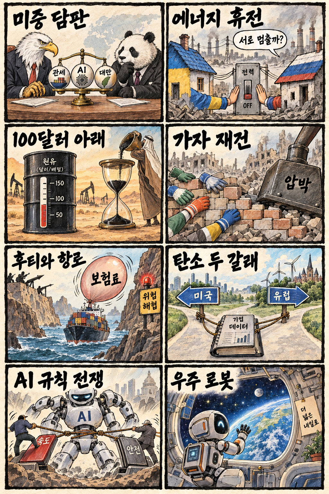
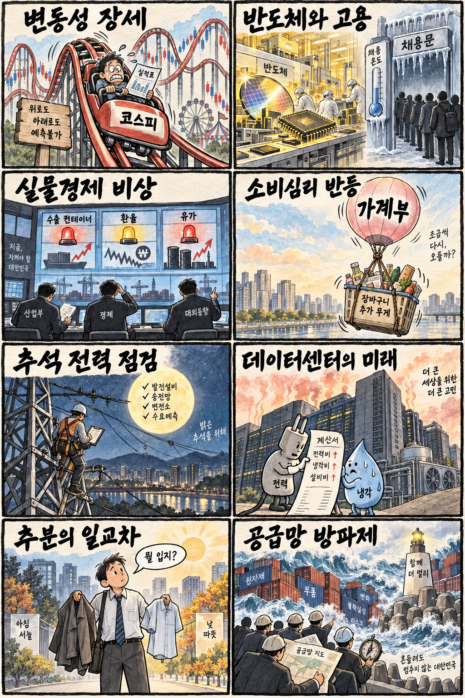

01
마이크론 · 1033.28→1096.16달러 · +6.09%
내용요약 시가 대비 6.09% 급등하며 조사 종목 중 가장 강한 흐름을 보였습니다. AI 메모리 수요 기대가 반도체 순환매의 중심에 섰습니다.
예상여파 국내 HBM·메모리 소재와 장비 심리에 우호적이지만 전일 급등 종목의 장전 갭 추격은 경계해야 합니다.
MORNING_BRIEFING_20260923
작성 시각: 2026-09-23 06:41 KST · 직전 미국 정규장과 2026-09-23 KST 당일 공개 기사 기준
직전 미국 정규장인 9월 22일 뉴욕증시는 다우 -0.36%, S&P 500 보합, 나스닥 +0.45%로 혼조 마감했습니다. 마이크론·반도체 장비주는 강했지만 금융·중국 ADR·소프트웨어는 약해 지수 내부 차별화가 컸습니다. 한국 증시는 반도체 투자심리에 우호적인 신호와 전일 KOSPI 장중 되밀림 부담이 맞서는 만큼 지수 추격보다 종목별 실적과 수급 확인이 우선입니다.
| 지수 | 종가 | 등락률 | 한국 증시 시사점 |
|---|---|---|---|
| 다우존스 | 51,863.69 | -0.36% | 지수보다 업종별 차별화 가능성 |
| S&P 500 | 7,764.64 | +0.00% | 지수보다 업종별 차별화 가능성 |
| 나스닥 종합 | 27,244.28 | +0.45% | 반도체 강세의 국내 공급망 확산 여부 주목 |
반도체가 지수를 받쳤지만 대형 기술주 안에서도 온도 차가 컸습니다.
시가 대비 강세로 AI 메모리 투자 기대가 다시 부각됐습니다.
전일 시가 대비 -2.01%로 마감해 갭 상승 추격 위험을 보여줬습니다.
수급·컨센서스·보정 표본·손익비 문턱을 모두 통과한 후보가 없습니다.
9월 22일 보고서는 검증 문턱 미충족으로 공식 추천을 내지 않았습니다. 게시 당시 판단을 유지하며 사후 종목을 추가하지 않습니다.
| 시장 | 종가 | 등락률 | 기준 |
|---|---|---|---|
| KOSPI | 7,017.91 | +0.15% | 9월 22일 · 시가 대비 -2.01% |
| KOSDAQ | 834.38 | -0.23% | 9월 22일 · 시가 대비 -1.39% |
| 다우존스 | 51,863.69 | -0.36% | 미국 9월 22일 정규장 |
| S&P 500 | 7,764.64 | +0.00% | 미국 9월 22일 정규장 |
| 나스닥 종합 | 27,244.28 | +0.45% | 미국 9월 22일 정규장 |
마이크론이 시가 대비 +6.09%로 가장 강했습니다.
어플라이드 머티리얼즈 +3.18%, 인텔 +3.12%였습니다.
프리포트맥모란이 시가 대비 +2.34% 상승했습니다.
JP모건 -3.41%, 알리바바 -3.20%로 약했습니다.
내용요약 시가 대비 6.09% 급등하며 조사 종목 중 가장 강한 흐름을 보였습니다. AI 메모리 수요 기대가 반도체 순환매의 중심에 섰습니다.
예상여파 국내 HBM·메모리 소재와 장비 심리에 우호적이지만 전일 급등 종목의 장전 갭 추격은 경계해야 합니다.
내용요약 시가 대비 3.18% 올라 반도체 장비주 강세가 확인됐습니다.
예상여파 국내 장비·소재주로 관심이 확산할 수 있으나 실제 수주와 실적 연결 여부를 구분해야 합니다.
내용요약 시가 대비 3.12% 상승해 반도체 업종 내 폭넓은 위험선호를 보였습니다.
예상여파 파운드리·서버 공급망 기대에는 긍정적이지만 개별 기업의 경쟁력과 업종 랠리를 혼동하지 않아야 합니다.
내용요약 시가 대비 3.41% 하락해 조사 종목 중 약세가 두드러졌습니다. 공개 시세만으로 단일 원인을 확정하지 않고 금융주 차익실현 맥락으로 봅니다.
예상여파 미국 금융주의 약세가 위험선호 전반으로 번지는지, 또는 반도체 중심 순환매에 그치는지 확인해야 합니다.
내용요약 시가 대비 3.20% 하락하며 중국 ADR이 미중 정상회담을 앞두고 변동성을 보였습니다.
예상여파 관세·기술 통제 협상 결과에 따라 국내 중국 소비·수출 연결주의 변동성도 커질 수 있습니다.
직전 거래일 KOSPI는 7,017.91로 전일 종가 대비 +0.15% 올랐지만 시가 대비로는 -2.01% 밀렸습니다. 미국 나스닥 상승과 마이크론·반도체 장비 강세는 국내 메모리 공급망에 우호적입니다. 다만 KOSPI가 장중 7,171.44에서 되밀린 만큼 오늘은 외국인 현물·선물 동반 수급, 7,000선 지지, 원·달러 안정 여부를 먼저 확인합니다.
오늘은 추천 없음 — 현금 관망
보고서 작성 시각은 장 개시 전입니다. 전일까지의 외국인·기관 수급, 최신 컨센서스 변화, 30건 이상 유사 조건 보정 확률, 예상 손익비 1.5 이상을 동시에 검증한 종목이 없어 점수와 상승확률을 임의로 만들지 않습니다.
관심 연결종목 HBM·반도체 장비·데이터센터 전력은 개장 후 관찰 대상일 뿐 매수 추천이 아닙니다. 전일 급등 종목과 과도한 갭 상승 종목은 추격매수하지 않습니다.
관세·AI 반도체 통제·대만 관련 합의와 발언 수위를 봅니다.
장 초반 현물·선물 동반 방향과 원·달러 흐름을 확인합니다.
마이크론 강세가 국내 HBM·장비로 이어지는지 봅니다.
전일 장중 되밀림 뒤 지지 여부와 갭 상승 종목의 매물을 확인합니다.
핵심 요약: AI 산업의 초점이 모델 성능에서 보안·전력·제조 자동화·온디바이스 생태계로 넓어지고 있습니다. 반도체 투자 수혜가 소재 실적으로 이어지는 한편 규제와 취약점 공개 원칙은 신뢰 경쟁의 핵심이 됐습니다.
내용요약 오픈AI 관련 해킹 사건을 둘러싸고 보안 투명성이 방어에 도움을 준다는 주장과 위험 정보를 공개하면 악용을 부를 수 있다는 반론이 맞선다는 당일 보도입니다.
예상여파 생성형 AI 기업은 취약점 공개 범위와 이용자 보호 절차를 더 명확히 해야 하며, 보안 검증과 책임 기준이 제품 신뢰도를 좌우할 수 있습니다.
내용요약 AI 메모리 증설 과정에서 반도체 소재 공정 실적이 축적되며 솔브레인의 호실적 배경이 됐다는 당일 보도입니다.
예상여파 HBM 투자 확대가 메모리 기업을 넘어 공정 소재·장비 실적으로 확산하는지 고객 다변화와 마진 흐름을 함께 볼 필요가 있습니다.
내용요약 국회에서 AI 시대의 전력 수요에 대응하기 위한 원자력 정책 방향을 논의하는 토론회가 열린다는 당일 보도입니다.
예상여파 데이터센터 전력 확보 논의가 원전·송전망·분산전원 투자로 이어질 수 있지만 인허가와 건설 기간이 실제 공급 속도를 제한할 수 있습니다.
내용요약 중국 제조 현장에서 로봇이 운반과 정밀 작업을 수행하며 AI 기반 스마트 제조를 확산하고 있다는 당일 현장 보도입니다.
예상여파 피지컬 AI 경쟁이 생산성 향상과 로봇 부품 수요를 키우는 동시에 국내 제조업의 자동화 투자 압박도 높일 수 있습니다.
내용요약 퀄컴이 에이전틱 AI 대중화의 핵심으로 기기·소프트웨어·서비스 기업 간 파트너십을 강조했다는 당일 보도입니다.
예상여파 온디바이스 AI 생태계가 확대되면 모바일 칩과 엣지 추론 수요가 늘 수 있으나 실제 사용자 경험과 전력 효율이 확산 속도를 가를 전망입니다.
핵심 요약: 미중 정상 담판이 관세·AI·대만을 한꺼번에 다루는 가운데 우크라이나 에너지 휴전 제안과 유가 하락이 지정학 위험 완화 기대를 키웠습니다. 가자 재건과 홍해 항로 문제는 여전히 물류·에너지 시장의 부담입니다.
내용요약 시진핑 중국 국가주석이 11년 만의 미국 국빈방문에 나서 관세·AI·대만 문제를 놓고 미국 대통령과 담판한다는 당일 보도입니다.
예상여파 협상 결과는 관세 유예, 희토류와 반도체 통제, 아시아 공급망과 환율의 단기 방향을 크게 흔들 수 있습니다.
내용요약 젤렌스키 우크라이나 대통령이 러시아가 에너지 시설 공격을 멈추면 우크라이나도 상응해 중단할 수 있다고 밝혔다는 당일 보도입니다.
예상여파 제한적 에너지 휴전이 성사되면 겨울 전력망 위험을 낮출 수 있지만 전면 휴전으로 확대될지는 군사·영토 협상에 달렸습니다.
내용요약 사우디 원유 공급 회복 조짐과 중동 외교 기대 속 국제유가가 배럴당 100달러 아래로 내려왔다는 당일 보도입니다.
예상여파 물가와 운송비 부담에는 완화 요인이지만 공급 정상화의 지속성과 중동 안보 상황에 따라 변동성이 재확대될 수 있습니다.
내용요약 에르도안 튀르키예 대통령이 가자지구 재건을 위해 이스라엘에 대한 국제 압박을 강화해야 한다고 촉구했다는 당일 보도입니다.
예상여파 재건 재원과 통치 구조, 휴전 이행을 둘러싼 외교전이 커지며 중동 리스크 프리미엄에 영향을 줄 수 있습니다.
내용요약 G7 외교장관들이 후티 공격이 국제무역과 해상 안전을 위협한다고 경고했다는 당일 보도입니다.
예상여파 홍해 항로 불안이 이어지면 선박 우회와 보험료 상승으로 유럽·아시아 물류비와 납기가 다시 압박받을 수 있습니다.

핵심 요약: 정부가 실물경제 비상 대응과 추석 전력 점검에 나선 가운데 소비심리는 반등했지만 고용의 체감 온도는 낮습니다. 오늘은 추분에도 낮 기온이 올라 큰 일교차와 지역별 건조·너울에 주의해야 합니다.
내용요약 산업통상자원부가 수출·에너지·공급망 충격에 대응하기 위해 실물경제비상대책본부를 가동했다는 당일 정책 보도입니다.
예상여파 유가·환율·물류 변동에 대한 지원책의 집행 속도가 수출기업 원가와 중소기업 자금 부담을 완화하는 핵심이 될 수 있습니다.
내용요약 9월 소비심리가 한 달 만에 반등했으며 소득 여건 개선 기대가 배경으로 제시됐다는 당일 보도입니다.
예상여파 내수 회복 기대에는 긍정적이지만 고물가와 금리 부담이 실제 소비지출로 이어지는 속도를 제한할 수 있습니다.
내용요약 반도체 호황에도 고용 개선이 약하다는 문제를 짚고 일자리 정책 해법을 촉구한 당일 사설입니다.
예상여파 수출과 기업이익의 성장 효과가 채용으로 연결되지 않으면 체감경기와 청년 소비 회복이 늦어질 수 있습니다.
내용요약 추석 연휴를 앞두고 정부가 전력 수급과 설비 운영 상태를 사전 점검했다는 당일 보도입니다.
예상여파 연휴 중 수요 변화와 고장 위험을 관리하면 생활·산업 현장의 공급 안정성을 높일 수 있으며 비상 대응 체계가 관건입니다.
내용요약 절기상 추분인 오늘 전국이 대체로 맑지만 낮 기온이 30도 안팎까지 오르고 일교차가 크다는 당일 기상 보도입니다.
예상여파 출근길에는 겉옷과 건강관리가 필요하고 해안 너울·수도권 건조 등 지역별 안전 정보도 함께 살펴야 합니다.
